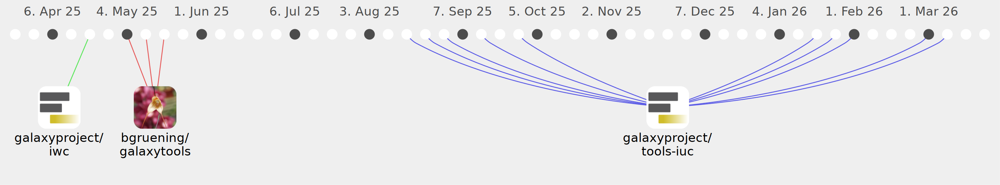

tcollins2011

Commits all-time: 88
Commits last year: 51

(46)
- ef6f428
- e912ff8
- 42a4e48
- aa70324
- 0952338
- c5d4f08
- 3fbf361
- 1803061
- 3ff68cd
- 35744a5
- 41512af
- c9b216d
- e877daf
- 3c05319
- 90853ae
- ad46597
- bd484c7
- 6530acd
- 810e0e2
- 3768540
- 5dc0b9d
- 028231c
- e16b439
- 88b157e
- 5b1fc1a
- e08626a
- 64aa275
- de338c1
- bb10f04
- 6399721
- a397c85
- 1e4a299
- 315d1c8
- b536bde
- 08bcc4d
- 65f4ba5
- f0e11a4
- fcb0b60
- 3809e7d
- 6b1494d
- 1ea7cb9
- e01a603
- ce35884
- 42bc13d
- 33c9eba
- 1cc2f4c
(3)
(2)